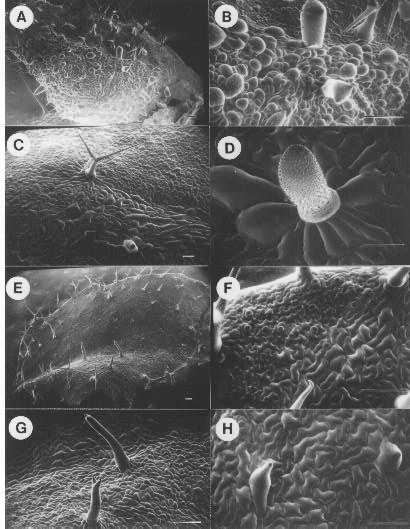

Figure 3. SEM analysis of mutant leaf sectors affected in both trichome
formation and general epidermal cell expansion. A) and B) Low and high magnifications
of a bubbled cell sector. Rudimentary trichomes also are visible in the
sector. Guard cells are not seen. C) A mutant sector containing distorted-like
trichomes and abnormally shaped epidermal cells is present toward the bottom
half of the figure. D) Higher magnification of a distorted-like trichome
present in the mutant sector shown in C). E) Normal shaped leaf with sector
containing abnormal trichomes and epidermal cells. F) High magnification
of sector border. The mutant sector contains under-expanded pavement cells
and lacks guard cells. G) Toward the edge of the sector shown in E) the
trichomes are unbranched. The lower half of the surface of these trichomes
is papillate in appearance whereas the top half is smooth. H) Only rudimentary
trichomes are present in the middle of the sector shown in E). The bar in
the lower left of each figure represents 100 µ.